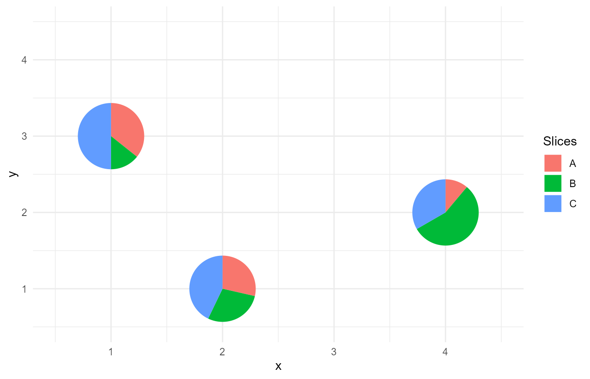

This vignette shows examples of potential unusual situations that can be
encountered when using the PieGlyph package and how they
are handled within the package
Missing values for a particular attribute
This is the most likely situation that could occur. The data might have missing (NA) values for some specific attributes for an observation.
plot_data <- data.frame(x = 1:4,
y = c(3,1,4,2),
A = c(5, 2, NA, 3),
B = c(NA, 2, 3, NA),
C = c(7, NA, NA, 3))
head(plot_data)
#> x y A B C
#> 1 1 3 5 NA 7
#> 2 2 1 2 2 NA
#> 3 3 4 NA 3 NA
#> 4 4 2 3 NA 3
The package handles this situation be replacing the any NA values with 0
in the data. The user is notified about this via a warning. This warning
can be silenced by specifying na.rm as TRUE
ggplot()+
geom_pie_glyph(aes(x = x, y = y),
categories = c('A','B','C'),
data = plot_data)Missing values for all attributes
This situation could occur when an observation has missing values for all the attributes.
plot_data <- data.frame(x = 1:4,
y = c(3,1,4,2),
A = c(5, 2, NA, 1),
B = c(2, 2, NA, 5),
C = c(7, 3, NA, 3))
head(plot_data)
#> x y A B C
#> 1 1 3 5 2 7
#> 2 2 1 2 2 3
#> 3 3 4 NA NA NA
#> 4 4 2 1 5 3
The package handles this situation by dropping the observation that has
all attributes as missing. The user is notified about this via a
warning. This warning can be silenced by specifying na.rm as
TRUE
ggplot()+
geom_pie_glyph(aes(x = x, y = y),
categories = c('A','B','C'),
data = plot_data)
Negative values for attributes
This problem arises because pie-charts cannot distinguish between positive and negative values. This causes unexpected behaviour and might affect interpretation.
plot_data <- data.frame(x = 1:4,
y = c(3,1,4,2),
A = c(5, -2, 3, 3),
B = c(2, 2, 0, 0),
C = c(-7, 1, 3, -3))
head(plot_data)
#> x y A B C
#> 1 1 3 5 2 -7
#> 2 2 1 -2 2 1
#> 3 3 4 3 0 3
#> 4 4 2 3 0 -3
ggplot(plot_data %>% pivot_longer(cols = LETTERS[1:3]))+
geom_arc_bar(aes(x0 = x, y0 = y,
r0 = 0, r = 0.2,
amount = value,
fill = name),
stat = 'pie')+
coord_fixed()
Comparing this figure with the fake data above, it is can be seen that the proportions shown in the plot, do not match the values present in the data. Observations 1, 2, and 4 had negative values for one category and it can be seen that the pie-charts can’t account for this and show only one attribute.
The package handles this situation by notifying the user about any negative values present in the data and asking them to remove them before creating a plot.
ggplot()+
geom_pie_glyph(aes(x = x, y = y),
categories = c('A','B','C'),
data = plot_data)
#> Error in f(...): Data contains negative values. Remove them before plotting.
Missing levels within an observation
This situation can occur if the data supplied to the function is stacked, so that all attributed are present in one column, with their respective values in another. It might happen at times that a particular observation would not have values for all attributes and a particular attribute might be dropped from the data.
As an example
plot_data <- data.frame('Student' = c(1,1,2,2,3,3,3),
'Subject' = c('Maths','Sci', 'Sci','Eng', 'Maths', 'Sci', 'Eng'),
'Marks' = c(58, 79, 62, 90, 95, 93, 94))
head(plot_data, 7)
#> Student Subject Marks
#> 1 1 Maths 58
#> 2 1 Sci 79
#> 3 2 Sci 62
#> 4 2 Eng 90
#> 5 3 Maths 95
#> 6 3 Sci 93
#> 7 3 Eng 94It can be seen that Students 1 and 2 each have marks for a subject missing and which aren’t present in the data.
This incomplete structure of the data causes problems when creating the pie-charts.
If such data is passed to the function, the user is notified about the issue and asked to complete the data.
ggplot(data = plot_data, aes(x = Student, y = 1))+
geom_pie_glyph(categories = 'Subject', values = 'Marks')
#> Error in f(...): Certain levels in categories column are missing, possibly due to having 0 or NA values.
#> Attempting to add the missing levels, but this might not always work.
#> User is recommended to use complete() function from dplyr to add the missing levels back in the data.
#> See the "unusual-situations" vignette for an example.The missing levels in the data can be added as follows
plot_data <- complete(plot_data, Student, Subject, fill = list(Marks = 0))
head(plot_data, 9)
#> # A tibble: 9 × 3
#> Student Subject Marks
#> <dbl> <chr> <dbl>
#> 1 1 Eng 0
#> 2 1 Maths 58
#> 3 1 Sci 79
#> 4 2 Eng 90
#> 5 2 Maths 0
#> 6 2 Sci 62
#> 7 3 Eng 94
#> 8 3 Maths 95
#> 9 3 Sci 93
ggplot(data = plot_data, aes(x = Student, y = 1))+
geom_pie_glyph(categories = 'Subject', values = 'Marks', radius = 1)